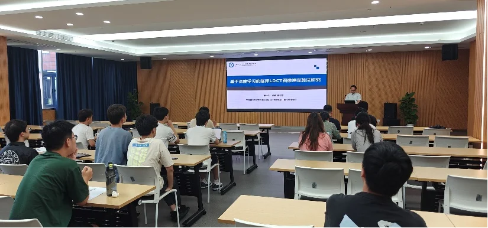
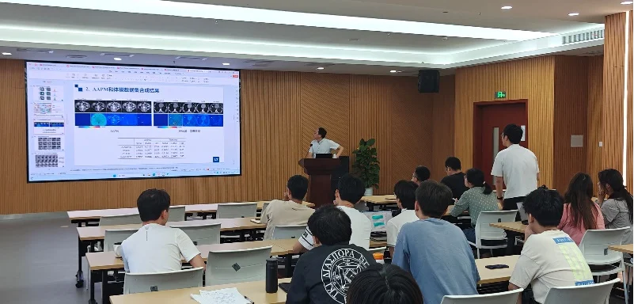
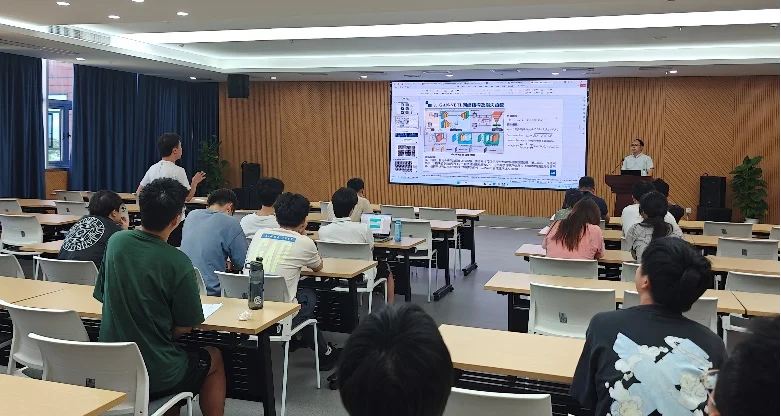

2024年8月14日，来自中国科学院苏州生物医学工程技术研究所的郑健研究员在4009会议室为我们带来了一场“基于深度学习的临床LDCT图像降噪算法研究”的报告。郑健研究员主要从事基于人工智能的医学影像技术研究，承担了JKW重点课题、国自然基金面上项目和国自然联合基金课题以及多项国家级和省级科研项目，并在IEEE汇刊（TCYB、TNNLS、TMI等）、CVPR、MICCAI等高水平国际期刊及会议上发表SCI检索论文60余篇，申请30余项发明专利。

在报告中，郑健研究员主要介绍了所在团队在低剂量计算机断层扫描（LDCT）方面的相关工作。郑健研究员首先讲解了团队设计的模块化迭代结构。该架构主要由串行迭代设计和混合迭代设计组成，并且在LDCT图像去噪方面取得了较好的结果。另一项工作提出的基于GAN和噪声编码迁移的方法可以使网络学习到临床CT噪声的相关特征，将真实临床无监督的降噪任务，借助实验标定转化为两个有监督的图像合成任务。由于全监督学习对于数据质量的要求比较高，而临床上获取的数据可能存在各种问题。因此为了直接有效使用临床数据，提出了自监督指导知识蒸馏的不成对学习架构。该架构基于图像噪声分解来设计自监督学习任务，利用高频和低频的互补学习，实现未配对的高剂量CT和低剂量CT的成对学习。最后一项工作是无监督域适应结构的设计，该结构主要采用的是教师-学生网络，主要目的是为了在目标域模型学习源域模型之后，使用目标域网络来更新源域网络。从而实现迭代知识传递和风格泛化的学习。

分享结束后，郝晋奎博士、马煜辉博后等人分别向郑老师提出内容方向的疑惑，郑老师一一做出解答。

通过郑老师条理清晰的讲述，同学们对于LDCT图像噪声处理方面的相关工作和知识有了更进一步的了解，同时也加深了同学们对自己课题思考。